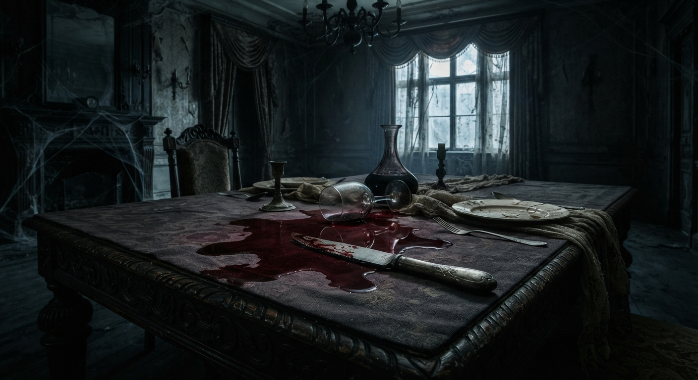
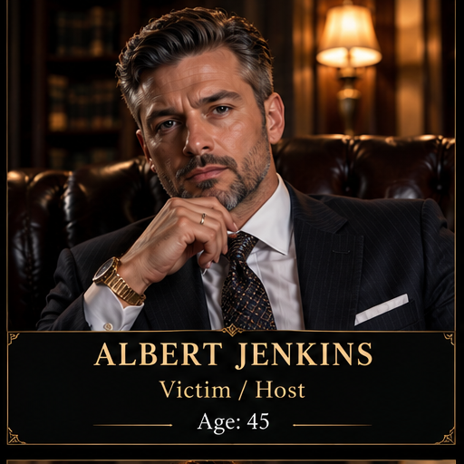

A MURDER MYSTERY INVESTIGATION
SHADOW'S END
The truth lies beneath the surface.
A wealthy benefactor has mysteriously died during a private dinner. Everyone at the dinner has a possible motive. Your job is to investigate the evidence and discover what happened.
Begin Investigation
THE CASE
A Night of Secrets
The death occurred during a private dinner at the benefactor's mansion. With multiple suspects, conflicting stories, and unexplained evidence, the truth is hidden somewhere within the case.
THE VICTIM

Albert Jenkins
THE LOCATION
Jenkins Estate Mansion
YOUR MISSION
Discover the truth